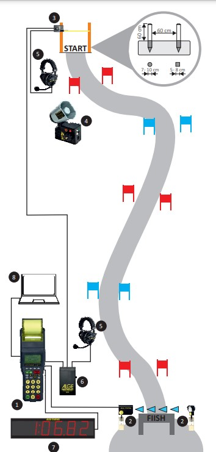
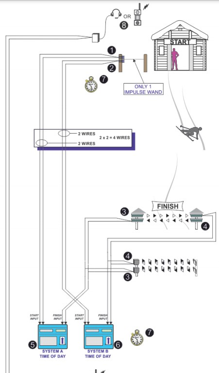

Electronic Timing¶
Ski races are timed using computerized electronic timing systems. The job of timing technicians at Mammoth Mountain is to install, maintain and operate these systems.
In its most basic form, an electronic timing system consists of a [homologated](link to glossary here) timing wand and a homologated finish photo cell connected by copper wire to a synchronized timing device recording ToD times. This timing device is then connected to PC software that calculates net times and points to produce race results.
For all scored FIS and US Ski & Snowboard races, which are the focus of this book, two electronic systems (one primary and one backup) and one manual (hand) timing system must be used. This ensures redundancy in the case of equipment or wiring failure during the race, or of human error. The [ICR](https://www.fis-ski.com/en/inside-fis/document-library/alpine-documents#9a7d11be565ad65858070c99) states in rule 611.2.1, for all FIS competitions:
…two synchronised electronically isolated timing systems operating in time-of-day must be used. One system will be designated system A (main system), the other system B (back-up system) prior to the beginning of the race … Time of day times must be immediately and automatically sequentially recorded on printed strips at the maximum precision of the timing device according to the requirements for homologation. The final result is calculated by subtracting the start time from the finish time for each skier’s run and is then expressed to 1/100th (0.01) precision by truncating the calculated net time on course. All times used for the final result must be from system A. If there is a failure of system A, a calculated net time from system B must be used following the same procedure as set out in art. 611.3.2.1.
Regarding hand times, rule 611.2.2 states:
Manual (hand) timing, completely separate and independent of the electronic timing, must be used for all competitions listed in the FIS Calendar. Stopwatches or hand operated battery powered timers that are installed at both the Start and the Finish and capable of expressing the time of day to at least 1/100th (0.01) precision qualify as proper hand timing devices. They must be synchronised prior to the start of the first run, with the same time-of-day as system A and system B (see art. 611.2.1). Printed records, either automatic or hand-written, of recorded hand times must be immediately available at the start and at the finish.
The procedure for calculating replacement times from backup systems will be explained later in this book.